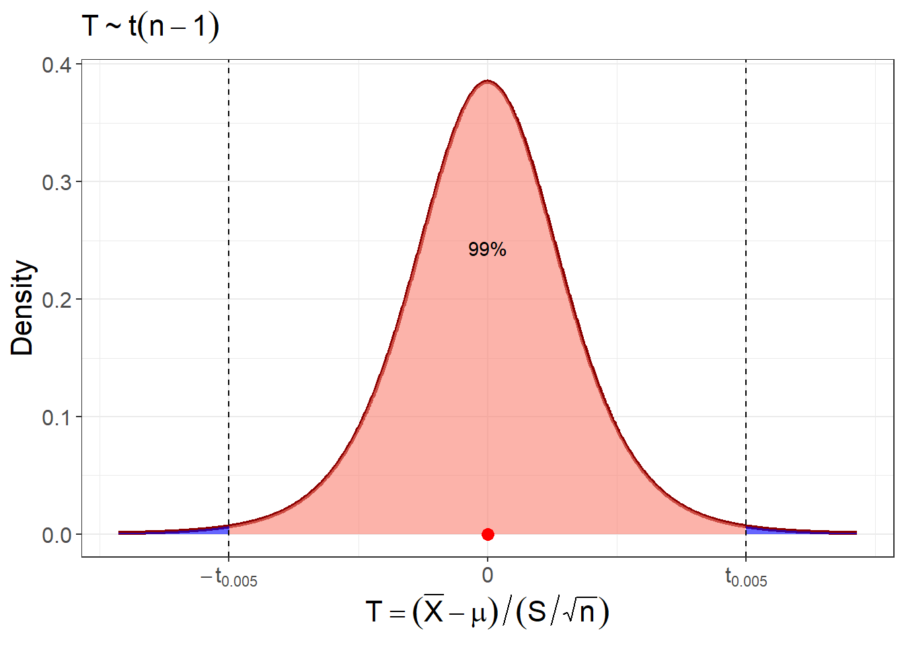
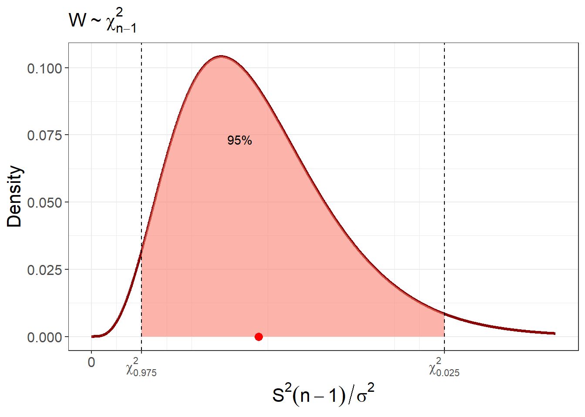
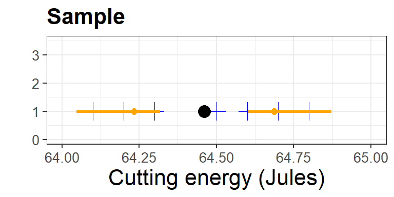

Chapter 13 Interval estimation
We perform repeated measurements of a random experiment to learn about the invariant properties that define it. To separate the signal from random variation, we can propose a probabilistic model whose parameters represent abstract properties of the underlying process. These parameters are assumed to remain fixed, while the randomness in the observations is described by the probability distribution over possible outcomes.
The assumption of parameter invariance is often reasonable. For instance, we do not expect the electric charge of an electron to change. However, other quantities—such as the average height of a population—may vary across generations. In more complex or extreme systems, such as city size distributions or gene connectivity networks, parameters like the mean or variance may not even be well defined; these systems may exhibit scale-free behavior.
Given the diversity of experimental settings, the nature of the parameters we estimate can vary widely. To begin, we will consider simpler cases where, under controlled conditions, we can assume that the parameters are fixed. This allows us to define estimators that will tend to cluster around the value of the parameter. In this framework, the only source of variation in parameter estimation comes from the randomness in the sample. For example, when using the average to estimate the mean of a random variable, it is the average—not the mean of the variable—that changes across samples.
This setup naturally leads to a central question: How confident can we be that the unknown (but fixed) parameter is close to its estimated value? This is a challenging question, since we do not know the parameter’s location. How can we answer it using only the data we have?
The key idea is to consider what would happen if we repeated the sampling process many times. If we assume a probability model for the data, we can ask: How far would the new estimates typically fall from the original one? If the estimator is unbiased, the spread of its sampling distribution can give us a sense of how close the estimates are likely to be to the true parameter value—because repeated estimates will cluster around it. The approach is known as frequentist, imaging repetitions of the sample.
In this chapter, we introduce the concept of confidence intervals for means, proportions, and variances. We will derive formulas for confidence intervals under various conditions, including when the population variance is known or unknown, and when the sample size is large.
13.1 Revisiting parameter estimation and marging of error
The expected value or the mean is a fundamental parameter of the random experiment. The researchers typically ask, if an experiment is repeated, the observations will gather about a number in a consistent manner?
Estimation of the mean
We have seen that whenever we take a random sample \((X_1, X_2, ... X_n)\), the sample mean \[\bar{X}=\frac{1}{n}\sum_{i=1}^n X_i\]
is an estimator of the mean \(\mu\) of the random variable \(X\). That is
\[\bar{x}=\hat{\mu}\] We take the average (the observation of the sample mean), as the value of \(\mu\) we trust the most given our data (maximum likelihood).
The estimator is unbiased because its values center about the parameter it is estimating
- \(E(\bar{X})=\mu\)
and consistent because as \(n\) increases then it is closer to the parameter, as its variance gets smaller
- \(V(\bar{X})=\frac{\sigma^2}{n}\)
where \(\sigma^2\) is the variance of \(X\). We call the quantity \(\sigma_{\bar{x}}=\frac{\sigma}{\sqrt{n}}\) the standard error (\(se\)).
Since \(\bar{X}\) is a random variable the estimation of the mean changes when we take another sample. Therefore, we know that we are making an error every time we take \(\bar{x}\) for \(\mu\).
Margin of error
When deciding whether the error in estimation \[\bar{X}-\mu\] is large or not, we defined the margin of error. The margin of error at \(5\%\) is the distance \(m\) from \(\mu\) such that \(\bar{X}\) has a probability of \(95\%\) to be observed within:
\[P(-m \leq \bar{X}-\mu \leq m)=0.95\]
If we assume that the distribution of \(X\) is normal, \(X \sim N(\mu, \sigma^2)\), then the standardized error from the mean
\[T=\frac{\bar{X}-\mu}{\frac{S}{\sqrt{n}}}\] follows a \(t\)-distribution with \(n-1\) degrees of freedom
\[T \sim t_{n-1}\]
where \(S^2=\frac{1}{n-1} \sum_{i=1}^n (X_i-\bar{X})^2\) is the sample variance. The margin of error \(m\) at \(5\%\) is given by the
\(P(\mu-m \leq \bar{X} \leq\mu + m)\) \[=P(-\frac{m}{S/\sqrt{n}} \leq T \leq\frac{m}{S/\sqrt{n}})=0.95\]
Since \(T\) is contained in the interval \((-t_{0.025, n-1},t_{0.025, n-1})\) with \(95\%\) of the probability, then the margin of error is
\[m=t_{0.025, n-1} \frac{s}{\sqrt{n}}\] where the limit of the interval \(t_{0.025, n-1}\) is the value of \(T\) that leaves \(2.5\%\) of probability at the right hand side of the \(t\)-distribution with \(n-1\) degrees of freedom
Python: t.sf(0.025, n-1)
R: qt(0.025, n-1, lower.tail = FALSE)Note that the margin of error is the expectation of how far the average will be observed from the mean with \(95\%\) of probability. Clearly if the observed average is luckily the mean then the error is zero, the errors will be symmetrical about zero and higher errors will be less probable.

13.2 Interval estimation for the mean
The problem is that in many experiments we do not know \(\mu\). If we are going to collect the first sample of the experiment, we do not have an expectation of how far the average is going to be observed from the mean, nor an expectation of its deviation from it.
Example (CRISPR)
CRISPR-Cas9 is a technology that enables gene editing. CRISPR-Cas system uses a guide RNA to direct the Cas9 enzyme to a specific DNA sequence, where it creates a cut. This allows researchers to disrupt, correct, or insert genetic material at targeted sites in the genome. The first-in-human study using CRISPR-edited cells, assessed the safety and feasibility of editing immune T cells to combat a form of lung cancer that had not responded to standard therapies (Lu et al. 2020). This is the reported efficiency of editing in the study
\[ \begin{array}{cc} \mathbf{Patient} & \mathbf{Editing Efficiency (\%)} \\ C-03 & 16 \\ C-02 & 34 \\ C-01 & 10 \\ B-03 & 16 \\ B-02 & 12 \\ B-01 & 30 \\ A-04 & 22 \\ A-03 & 10 \\ A-02 & 20 \\ A-01 & 18 \\ PreA-02 & 8 \\ PreA-01 & 16 \\ \end{array} \]
This data is the repetition of a random experiment 12 times, where the efficiency was the random variable and the observation unit a patient. As the same experimental procedure was applied, it is expected that the efficiency will cluster around some value that represents the CRISPR experiment of the study.

The observations (crosses) and the average (dot) is all we have. We can assume that if the researchers were to repeat the sample on 12 different patients, the average will not be far from the value that they observed, because the average clusters around the mean. However, we do not know where the mean is.
Nonetheless, we can assume that editing efficiency is normally distributed
\[X \sim N(\mu, \sigma^2)\] at unknown \(\mu\) and \(\sigma\).
Data suggest that the expected editing efficiency \(\mu\) is about \(\bar{x}=17.66\). But, how confident are we? after all, we know that when we take the value of \(\bar{x}\) for \(\mu\), we know we are making a mistake but do not know how big it actually is. The key is to note that the dispersion of sample (\(s\)) will give us an idea on how the average will disperse (\(s/\sqrt{n}\)).
Definition
To address the question of where \(\mu\) is, we define the confidence interval for \(\mu\). From the margin of error equation
\[P(-m \leq \bar{X} - \mu \leq m)=0.95\] We solve for \(\mu\), which is indeed the real unknown
\[P(\bar{X} - m \leq \mu \leq \bar{X} + m)=0.95\]
The left and right limits of the inequality are random variables which motivate the definition for the random confidence interval at \(95\%\):
\[(L,U)=(\bar{X} - m,\bar{X} + m)\]
This interval is a new random variable and it has by definition a probability of \(0.95\) to contain \(\mu\).
The observed interval that we obtain from the experiment is (lower case)
\[(l,u)=(\bar{x} - m,\bar{x} + m)\]
This interval either contains or it does not contain the parameter \(\mu\): we will never know!
However, we can still say that we have a confidence of \(95\%\) that the interval \((l,u)\) has captured the true unknown parameter \(\mu\). Think of a lottery scratch ticket that we are not allow to scratch to see the prize before buying it. The ticket either has or does not have the prize, only that we do not know which case it is. However, we can be confident that the ticked does not have the main prize, because the probabilities of the game (not the instance in my hand) are low.
13.3 Confidence Interval Estimation
We can estimate confidence intervals when we are able find an standardization of an estimator with a known distribution.
Standardization allows separating the random variation from the parameters, which is not always possible but can be done for some useful and widely applied examples.
Notice that the interval depends of the margin error, which is a parameter (property) of the estimator. As such, the observed interval needs to be computed with a required statistical interpretation and, consequently, it is not a pure datum of the experiment. Hence, confidence intervals are estimated rather then directly observed from the experiment.
13.3.1 Estimation of the mean for normal variables
When the random variable \(X\) is a normal variable, we can readily write the confidence interval at \(95\%\)
\[(l,u)=(\bar{x} - m, \bar{x} + m)\] where \[m=t_{0.025, n-1} \frac{s}{\sqrt{n}}\]
That is:
\[(l,u)=(\bar{x} - t_{0.025, n-1} \frac{s}{\sqrt{n}}, \bar{x} + t_{0.025, n-1} \frac{s}{\sqrt{n}})\]
Example (CRISPR)
In the CRISPR example, we assume that \(X\) is normally distributed and from the data we can compute \(\bar{x}= 17.66\) and \(s=7.9\).
Then the margin of error is
\[m=t_{0.025, 11} \frac{s}{\sqrt{n}}=2.2\frac{7.9}{\sqrt{12}}=5.04\] and the \(95\%\) confidence interval is
\((l,u)=(\bar{x} - m, \bar{x} + m)=\) \[(12.61, 22.71)\]
Which means that we are \(95\%\) confident that the efficiency of the T-cell editing can be found between \(12.6\%\) and \(22.7\%\)
Python:
from scipy.stats import ttest_1samp
x = [16, 34, 10, 16, 12, 30, 22, 10, 20, 18, 8, 16]
res = ttest_1samp(x, popmean=0)
print(res.confidence_interval)
R:
x <- c(16, 34, 10, 16, 12, 30, 22, 10, 20, 18, 8, 16)
t.test(x)$conf.int
We can also write the interval as
\[\hat{\mu}=\bar{x} \pm m = 17.6 \pm 5.0\] This means that, when estimating the mean by the average, we are confident that the efficiency is between the tenths and twenties of percentage points, and less confident in the figures on percentage units. We have no confidence on the decimal places.
Remember that the confidence interval \((l,u)\) (black below) is an observation of the random confidence interval \((L,U)\). Therefore, if we change the sample then \((l,u)\) changes (grey below). The frequentist statistician encourages us to imagine selecting a different group of \(12\) patients, compute the confidence intervals, and repeat this process an infinite amount of times. Then, about \(95\%\) of the confidence intervals will contain the unknown \(\mu\). We just do not know which intervals, including the estimated one, will contain \(\mu\)!

We can say that Lu and colleagues achieved a T-cell editing efficiency of about \(17\%\) as they repeated the experiment 12 times in similar conditions. It is clear, however, that other laboratories may obtain different efficiencies, as some of the conditions will change. Therefore, we expect that the parameter \(\mu\) will change between laboratories in addition to sampling error. At \(17\%\) efficiency, they showed that the treatment appear to be safe for 12 cancer patients, but as efficiency is improved and more patients are recruited then patient safety will need to be updated.
Confidence level
We can change our confidence from \(95\%\) to \(99\%\). When we computed the margin of error at \(95\%\), we left out \(\alpha=0.05\) probability, \(0.025\) on each side of the standardized error.
Now, we can leave out \(\alpha=0.01\) probability, \(0.005\) on each side. Therefore the \(99\%\) confidence interval is
\[(l,u) = (\bar{x} - t_{0.005, n-1}\frac{s}{\sqrt{n}},\bar{x} + t_{0.005, n-1}\frac{s}{\sqrt{n}})\]

where \(t_{0.005, n-1}=F^{-1}(0.995)\) is the inverse of the probability density function for the \(t\)-distribution.
Python: t.ppf(1-0.005, n-1)
R: qt(0.005, n-1, lower.tail = FALSE)Example (Impact energy)
A metallic material is tested for impact to measure the energy required to cut it at a given temperature. Ten specimens of A238 steel were cut at 60ºC at the following impact energies (J):
64.1, 64.7, 64.5, 64.6, 64.5, 64.3, 64.6, 64.8, 64.2, 64.3
If we assume that the impact energy is normally distributed we can estimate the \(99\%\) confidence interval for the cutting energy, as an intrinsic propioerty of the material. From the data we have
- \(\bar{x}=64.46\)
- \(s=0.227\)
we assume
- \(\alpha=0.01\) (the confidence limit)
- \(t_{0.005,9}=3.24\) obtained from \(t_{0.005,9}=\)
t.ppf(1-0.005, 9)
The confidence interval is then
\((l,u)=(\bar{x}- t_{0.005,9}\frac{s}{\sqrt{n}},\bar{x}+t_{0.005,9} \frac{s}{\sqrt{n}})\)
\[=(64.22, 64.69)\]
Python:
from scipy import stats
x = [64.1,64.7,64.5,64.6,64.5,64.3,64.6,64.8,64.2,64.3]
res = stats.ttest_1samp(x, popmean=0)
res.confidence_interval(confidence_level=0.99)
R:
x <- c(64.1,64.7,64.5,64.6,64.5,64.3,64.6,64.8,64.2,64.3)
t.test(x, conf.level = 0.99)$conf.intNote that the confidence interval at \(95\%\) is \((64.29, 64.62)\), which is smaller than the \(99\%\) interval. The wider intervals with increasing confidence shows the trade-off between confidence and precision.
13.3.2 Estimation of the proportion for dichotomic variables
Example (Mendel’s peas)
Mendel first produced a large number of hybrid pea plants. These were plants for which one parent descended from a long line of plants that produced round peas, and the other from a long line that produced wrinkled peas. He then took pairs of these hybrid plants and produced 253 pea plants. He collected a total of 7,324 seeds from the hybrid offspring and observed that 5,474 were round and 1,850 were wrinkled (Mendel 1901). What is the estimated proportion of round seeds in the offspring observed by Mendel?
The outcome \(X_i\) that the \(i\)-th seed is a round pea is a Bernoulli trial
\[X_i \sim Bernoulli(p)\] with mean \(\mu=p\) and variance \(\sigma^2=p(1-p)\).
Mendel’s sample would look something like \[(x_1,x_2, x_3, ...x_{n=7324})=(0,1,0,.. 1, 0)\] with \(5474\) ones and in a total of \(7324\) repetitions of the trial. The sample has an average \[\bar{x}=\frac{1}{7324}\sum_{i=1}^{7324} x_i=\frac{5474}{7324}=0.747\] Which is nothing but the relative frequency of the round peas. Since, in general, the sample mean is an unbiased estimator of \(\mu\), then, for the Bernoulli trial, this the relative frequency is a point estimate of the parameter \(p\)
\[\hat{p}=\bar{x}=0.747\]
This makes sense because \(\bar{x}\) is the observed relative frequency of ones \(f_1\) in the sample. And as such, it is an estimator of the probability of observing a one in a Bernoulli trial
\[f_1 =\hat{P}(X=1)\] However, how confident are we about this estimation? That is, how confident are we to take the relative frequency as the value of the probability? We want a confidence interval for \(p\).
Confidence intervals for proportions
When \(n\hat{p}>5\) and \(n(1-\hat{p})>5\), the standardized error of estimating \(p\) with \(\bar{X}\) can be approximated to a standard normal variable with the help of the central limit theorem, using De Moivre’ normal approximation of the Binomial.
\[Z=\frac{\bar{X}-\mu}{\sigma/\sqrt{n}}= \frac{\bar{X}-p}{\big[\frac{p(1-p)}{n} \big]^{1/2}}\sim N(0,1)\] Therefore the margin of error \(m\) at \(95\%\) is
\[m= z_{0.025}\frac{\sqrt{p(1-p)}}{\sqrt{n}}\] Since we do not know what the value of \(p\) is then we will estimate it with \(\bar{x}\) and then \[m= z_{0.025}\frac{\sqrt{\bar{x}(1-\bar{x})}}{\sqrt{n}}\] Which is a good approximation when the central limit theorem starts to hold. Therefore, an approximate \(95\%\) CI interval of \(p\) is:
\[CI=(l,u)=(\bar{x}-z_{0.025}\big[\frac{\bar{x}(1-\bar{x})}{n} \big]^{1/2}, \bar{x}+z_{0.025}\big[\frac{\bar{x}(1-\bar{x})}{n} \big]^{1/2})\] Note that we could not solve exactly the margin of error without reference to the parameter \(p\). We were able to introduce an estimate because the central limit theorem achieves a suitable standardization when \(n\) is large. More accurate confidence intervals for small \(n\) or far from \(p=1\) and \(p=0\) have been developed.
Example (Mendel’s peas)
In Mendel’s experiments, he counted \(5474\) rounded peas in a total of \(7324\) total seeds and he therefore obtained
\(\bar{x}=0.747\) (relative frequency as a point estimate of the proportion)
\(z_{0.025}=1.96\) (using
norm.sf(0.025)).
Therefore the \(95\%\) confidence interval for \(p\) is
\((l,u)=(0.747-0.013, 0.747+0.013)\)
\[=(0.734, 0.760)\]
Python:
from statsmodels.stats.proportion import
proportion_confint(5474, 7324)
R:
prop.test(5474, 7324)$conf.intThe estimated probability of observing a round pea is
\[\hat{p} = 0.747 \pm 0.013\]
which validates Mendel’s first law, as it aligns closely with the theoretical value deduced for \(p\). Let \(A\) represent the allele for round peas. In Mendel’s experiments, all offspring were produced from hybrid parents carrying alleles \((A, A')\). Since the round trait is dominant, a pea will be round if it inherits at least one \(A\) allele. This corresponds to the event \((A_m \cup A_f)\), which occurs in three out of four possible allele combinations. Therefore, the theoretical probability of a round pea is \(p = 3/4 = 0.75\), a value that is well captured by the inferred confidence interval of the relative frequency.
Mendel’s success lay in identifying a simple biological system where probabilities could be reasoned and predictions made about where relative frequencies would cluster. However, it is important to remember that this reasoning was grounded in prior observation, experimentation, and reflection on empirical data. A map cannot be drawn without first exploring the territory.
13.4 Estimation of the variance
The variance is another fundamental parameter of the random experiment. The random experiment will be characterized by a variability that may be intrinsic of the observation unit or a characteristic of the experimental error when measuring an outcome. Researchers in this case may ask, if an experiment is repeated, how far the observations will be from the mean?
We have seen that whenever we take a random sample \((X_1, X_2, ... X_n)\), the sample variance \[S^2=\frac{1}{n-1}\sum_{i=1}^n (X_i-\bar{X})^2\] is an estimator of the variance \(\sigma^2\) of the random variable \(X\). The estimator is unbiased because its values are centered about the parameter it is estimating
\[E(S^2)=\sigma^2\]
and it is also consistent. We can then take a the value of \(s^2\) from a particular sample as the value of \(\sigma^2\), which is a characteristic of random experiment. That is
\[s^2=\hat{\sigma}^2\]
Since \(S^2\) is a random variable the estimation of the variance changes when we take another sample.
Example (impact energy)
A metallic material is tested for impact to measure the energy required to cut it at a given temperature. Ten specimens of A238 steel were cut at 60ºC at the following impact energies (J):
64.1, 64.7, 64.5, 64.6, 64.5, 64.3, 64.6, 64.8, 64.2, 64.3
While the cutting energy appears to cluster about a value, the specimens show variability on their energies. Some are cut easier than others. How stable is the cutting energy of the specimens? what is estimation of the variance of these data?
- The sample variance is \(s^2=0.051\)
Python:
import numpy as np
x = [64.1, 64.7, 64.5, 64.6, 64.5, 64.3, 64.6, 64.8, 64.2, 64.3]
np.var(x, ddof=1)
R:
x <- c(64.1, 64.7, 64.5, 64.6, 64.5, 64.3, 64.6, 64.8, 64.2, 64.3)
var(x)How confident can we be on the decimals places of this estimation? What is the confidence interval for the variance?
13.5 Confidence interval for the variance
To compute a confidence interval of the variance, we need a statistics that is a function of \(S^2\) and allows to measure the standardize error we make when we estimate \(\sigma^2\) by \(s^2\).
If we assume that the distribution of \(X\) is normal, \(X \sim N(\mu, \sigma^2)\), then the standardized error from the variance
\[W=\frac{S^2(n-1)}{\sigma^2}\] follows a \(\chi^2\) distribution with \(n-1\) degrees of freedom
\[W \sim \chi^2_{n-1}\]
This is an error rate that if the observed sample variance \(s^2\) is luckily the variance \(\sigma^2\) then the rate is \((n-1)\). The errors will distribute asymmetrical about \((n-1)\) and higher errors and those close to \(0\) will be less probable.
Using this error rate, we will look for a \(95\%\) confidence interval \((L,U)\) of \(\sigma^2\) such that the random interval \[P(L \leq \sigma^2 \leq U)=0.95\]
captures \(\sigma^2\) with \(95\%\) of probability.
We start by determining the values that capture the \(95\%\) of the \(\chi^2\)-distribution
\[P(\chi^2_{0.975,n-1} \leq W \leq \chi^2_{0.025,n-1})=0.95\]

Replacing the value of \(W\)
\[P(\chi^2_{0.975,n-1} \leq \frac{S^2}{\sigma^2}(n-1) \leq \chi^2_{0.025,n-1})=0.95\]
and solving for \(\sigma^2\)
\[P(\frac{S^2 (n-1)}{\chi^2_{0.025,n-1}}\leq \sigma^2 \leq \frac{S^2(n-1)}{\chi^2_{0.975,n-1}})=0.95\]
We find a random interval that captures \(\sigma^2\) with \(95\%\) confidence
\[(L,U) = (\frac{S^2 (n-1)}{\chi^2_{0.025,n-1}},\frac{S^2(n-1)}{\chi^2_{0.975,n-1}})\]
The observed \(95\%\) confidence interval (script size) is
\[(l,u) = (\frac{s^2 (n-1)}{\chi^2_{0.025,n-1}},\frac{s^2(n-1)}{\chi^2_{0.975,n-1}})\]
where
\(\chi^2_{0.975,n-1}=\)
chi2.sf(0.975, df=n-1)is the value of \(W\) that leaves \(0.975\) probability to the right hand side.\(\chi^2_{0.025,n-1}=\)
chi2.sf(0.025, df=n-1)is the value of \(W\) that leaves \(0.025\) probability to the right hand side.
Example (impact energy)
Ten specimens of A238 steel were cut at 60ºC at finding a sample variance \(s^2=0.05155556\). To estimate the confidence interval for the variance we compute
\(\chi^2_{0.975,n-1}=2.700389\)
\(\chi^2_{0.025,n-1}=19.02277\)
Python:
chi2.ppf(1 - 0.975, df=9)
chi2.ppf(1 - 0.025, df=9)
R:
qchisq(0.975, 9, lower.tail = FALSE)
qchisq(0.025, 9, lower.tail = FALSE)Therefore
\[(l,u)= (\frac{0.227^2 (10-1)}{19.02277},\frac{0.227^2(10-1)}{2.700389})=(0.02,0.17)\]
We find that we can be \(95\%\) confident to have captured \(\sigma^2\) within this interval.
Note that the interval for the variance is not symmetric and we cannot formulate it as an estimate \(\pm\) margin of error. Given an average, we can then estimate with \(s\) the expected distance of a subsequent observation of the random experiment, that is its standard deviation \(\sigma\). The confidence interval for the standard deviation will be the square root of the the interval for the variance, and will give us the best and the worst case at which we can expect the observation to fall (orange) from either side of the mean.

13.6 Questions
1) The margin of error at \(95\%\) confidence of a normal variable is
\(\qquad\)a: \(\frac{s}{\sqrt{n}}\); \(\qquad\)b: \(1.96\times se\); \(\qquad\)c: \(\frac{\sigma}{\sqrt{n}}\); \(\qquad\)d: \(\sigma\)
2) when we talk about \(z_{0.025}\) we mean:
\(\qquad\)a: The value of a normal standard variable that has accumulated up to \(99.75\%\) of probability; \(\qquad\)b: The value of a normal standard variable that has accumulates up to \(0.25\%\) of probability; \(\qquad\)c: The probability of a standard variable up to \(99.75\%\); \(\qquad\)d: The probability of a standard variable up to \(0.25\%\)
3) The random confident interval \((L,U)\) for the mean at \(95\%\)
\(\qquad\)a: is a two dimensional parameter of the sample distribution; \(\qquad\)b: gives the limits where \(\mu\) has a probability of occurring \(95\%\) of the times; \(\qquad\)c: is an estimate of the average; \(\qquad\)d: captures \(\mu\) \(95\%\) of the times
4) A confidence interval for the mean written as \(\hat{\mu}=56.99 \pm 0.01\)
\(\qquad\)a: indicates that we are \(\%99\) confident that the mean is \(56.99\); \(\qquad\)b: indicates that we cannot trust the last decimal place on the estimation of the mean; \(\qquad\)c: indicates that the mean of the population is at \(56.99\) with error \(0.01\); \(\qquad\)d: indicates that we can trust the unit figure (\(6\)) on the estimation of the mean
5)If we know the value of \(\mu\) and find that the confidence interval did not catch it then
\(\qquad\)a: the confidence interval is not well computed; \(\qquad\)b: it is a rare observation of the confidence interval; \(\qquad\)c: the confidence interval does not estimate the mean; \(\qquad\)f: there is little probability of finding the mean in the confidence interval
13.7 Exercises
13.7.0.1 Exercise 1
In a scientific paper, the authors report a \(95\%\) confidence interval of \((228, 232)\) for the natural frequency (Hz) of a metallic beam. They used a sample of size \(25\) and considered that the measurements were distributed normally.
What is the mean and the standard deviation of the measurements?
Compute the \(99\%\) confidence interval.
hints:
in R \(t_{0.025, 24}=\)
t.ppf(1-0.025, 24)\(\sim 2\)in R \(t_{0.005, 24}=\)
t.ppf(1-0.005, 24)\(\sim 2.8\)
13.7.0.2 Exercise 2
compute \(95\%\) CI the mean of a normal variable with known variance \(\sigma^2=9\) and \(\bar{x}=22\), using a sample of size \(36\).
13.7.0.3 Exercise 3
This year, \(17\) of \(1000\) of patients with influenza developed complications.
Compute the \(99\%\) confidence interval for the proportion of complications.
The previous year \(2\%\) showed complications. Can we say with \(99\%\) confidence that this year there is a significant drop in influenza complications?
13.8 Practice
Load misophonia data https://alejandro-isglobal.github.io/SDA/data/data_0.txt
Compute the confidence interval for the mean of the cephalometric measures. (“Angulo_convexidad”, “protusion.mandibular”, “Angulo_cuelloYtercio”, “Subnasal_H”)
Compute the confidence interval for the proportion of misophonic (“Misofonia”), and depression (“depresion.dic”).
Compute the confidence interval for the variance of the age (“Edad”). What is the confidence interval for the standard deviation of the population?